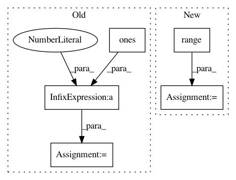

88cd16a4e3c70d82567c96c1ffc277ef8ea87a3f,pymc3/tests/test_hmc.py,,test_leapfrog_reversible,#,14
Before Change
step = BaseHMC(vars=model.vars, model=model)
bij = DictToArrayBijection(step.ordering, start)
q0 = bij.map(start)
p0 = floatX(np.ones(n) * .05)
precision = select_by_precision(float64=1E-8, float32=1E-4)
for epsilon in [.01, .1, 1.2]:
for n_steps in [1, 2, 3, 4, 20]:
After Change
state = start
for _ in range(n_steps):
state = step.integrator.step(epsilon, state)
for _ in range(n_steps):
state = step.integrator.step(-epsilon, state)
close_to(state.q, start.q, precision, str((n_steps, epsilon)))
close_to(state.p, start.p, precision, str((n_steps, epsilon)))
In pattern: SUPERPATTERN
Frequency: 3
Non-data size: 5
Instances
Project Name: pymc-devs/pymc3
Commit Name: 88cd16a4e3c70d82567c96c1ffc277ef8ea87a3f
Time: 2017-07-18
Author: adrian.seyboldt@gmail.com
File Name: pymc3/tests/test_hmc.py
Class Name:
Method Name: test_leapfrog_reversible
Project Name: BindsNET/bindsnet
Commit Name: c0a89cb46b840905674f932b5f7aa0d7d607e090
Time: 2018-05-08
Author: djsaunde@umass.edu
File Name: examples/space_invaders/et_space_invaders.py
Class Name:
Method Name:
Project Name: Microsoft/nni
Commit Name: 89fa23cb77746d36b4f1ff6cd4fcefbab18c7d70
Time: 2020-06-11
Author: 38930155+chicm-ms@users.noreply.github.com
File Name: src/sdk/pynni/tests/test_compressor.py
Class Name: CompressorTestCase
Method Name: test_torch_l1filter_pruner